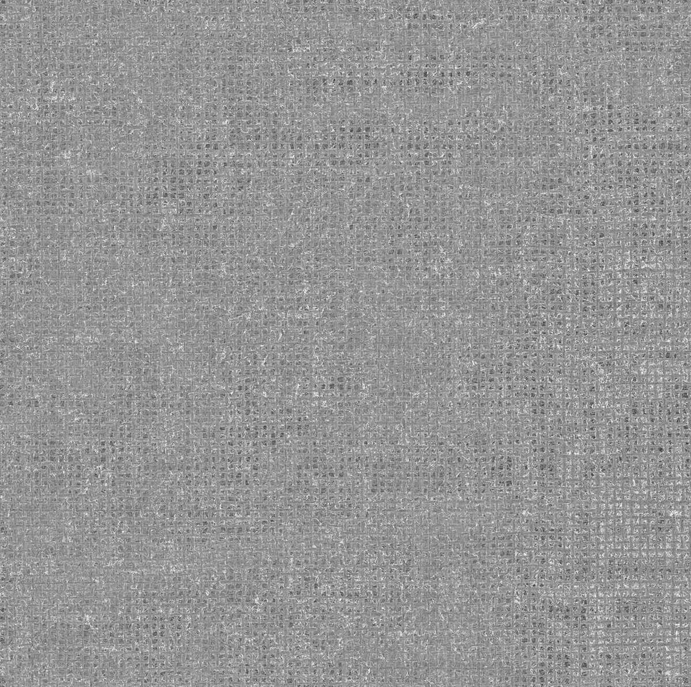

1
ふた
上の口をふさぐ部分。ほこりを防ぎ、中身を足すときに外します。

店のこと
確認できているのは所在地とInstagramのみです。そのほかは準備中です。
このサイトのこと
トップの配置図にある六つの部位を、ひとつずつ説明しています。制作側の連想で、お店の理念・由来とは無関係です。実際の製品の仕様を示すものでもありません。
上の口をふさぐ部分。ほこりを防ぎ、中身を足すときに外します。
中身をためておく、縦長の透明な筒。重みで下へ送り出します。

出口の開き具合を決める回転つまみ。目盛りに合わせて回します。

押し下げると出口が開き、離すと閉じるレバー。

中身が落ちてくる細い出口。下の受け皿へ向いています。

落ちてきたものやこぼれを受け止める台。

写真はイメージです。お店のものではなく、お店で提供している商品を示すものでもありません。